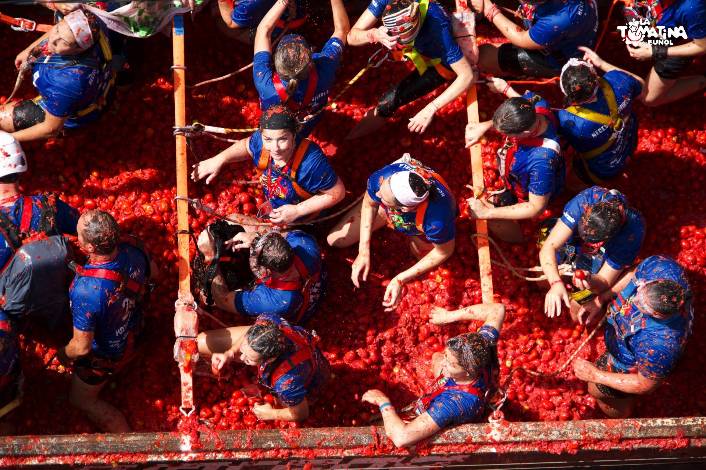

라 토마티나 공식 사진 2026_148
라 토마티나 페스티벌(토마토 축제)(La Tomatina)
대륙
유럽
국가
스페인
지역
발렌시아주 부뇰
장소
발렌시아주 부뇰
시기
매년 8월 마지막 수요일
https://latomatina.info/라 토마티나 공식사이트
라 토마티나(La Tomatina)는 스페인 부뇰에서 열리는 스페인의 축제로, 참가자들이 서로에게 토마토를 던지며 즐기는 축제입니다. 이 축제의 는 1945년 8월 마지막 수요일, 부뇰에서 전통 퍼레이드 도중 구경에 지친 젊은이들이 공식 행렬 앞을 막고 자리를 잡으면서 시작되었습니다. 이과정에서 참가자 중 한명이 실수로 넘어졌고, 분노에 그 참가자가 길을막는 것을 때리기 시작했고 시장 채소 가판대가 근처에서 몇몇 젋은이들 사이에서 시작된 싸움이 격화돠면서 참가자들이 토마토를 던졌고, 이듬해에도 같은 사람들이 각자 토마토를 가져와 싸움을 반복하면서 전통이 시작 되었습니다. 축제 전 몇칠간은 빠에야 요리 대회와 토마토 불꽃놀이가 열리며, 중세 도심에는 곳곳에서 다양한 음악 밴드와 퍼레이드가 펼쳐집니다. 본격적인 토마토 싸움이 시작되는 수요일 아침에는 '팔로 하본'이라는 행사가 열립니다. 기름을 칠한 긴 기둥 꼭대기에 햄 조각을 매달려 있으며, 참가자들이 기둥을 타고 올라가 햄들 떨어뜨리게 하는 것이 목표로 합니다. 누군가 햄을 떨어뜨리는데 성공하면 축제의 하이라이트인 대규모 토마토 싸움이 본격적으로 시작됩니다. 스페인 부뇰에서 토마토 축제를 참가한다면 인원 제한이 있으므로 반드시 사전에 유료 티켓을 예약하고 가야합니다.